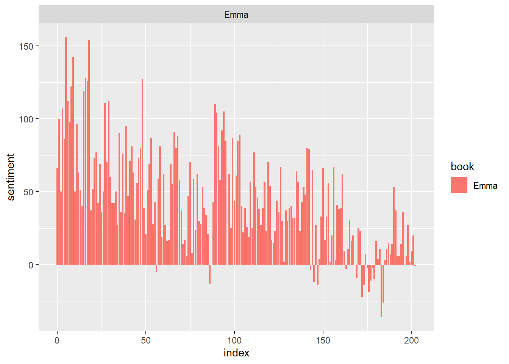
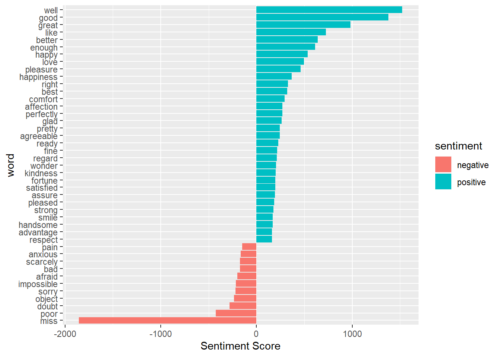
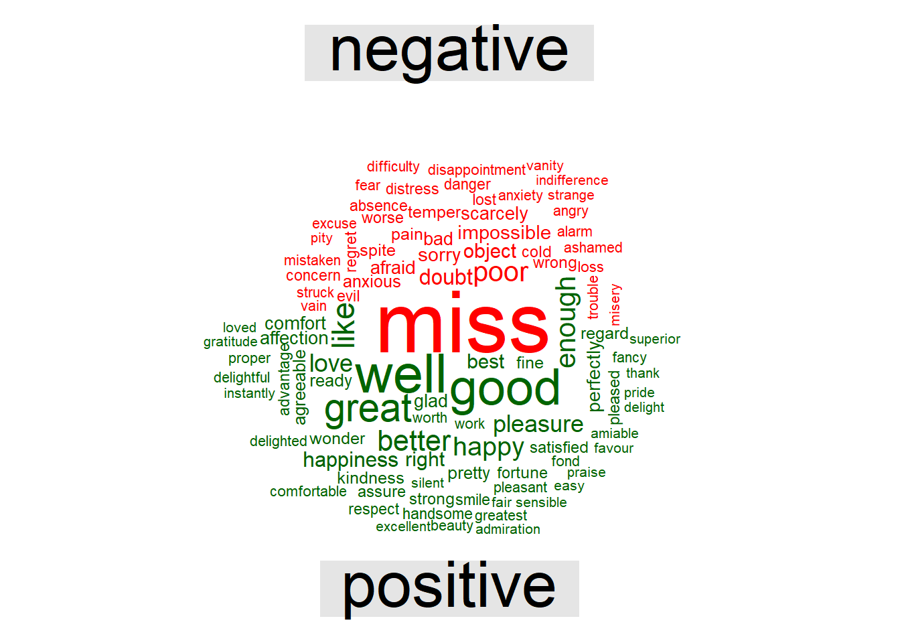

if(!require(tidytext)) {
install.packages("tidytext")
}## Loading required package: tidytextlibrary(tidytext)
sentiments## # A tibble: 6,786 x 2
## word sentiment
## <chr> <chr>
## 1 2-faces negative
## 2 abnormal negative
## 3 abolish negative
## 4 abominable negative
## 5 abominably negative
## 6 abominate negative
## 7 abomination negative
## 8 abort negative
## 9 aborted negative
## 10 aborts negative
## # ... with 6,776 more rowsget_sentiments("bing")## # A tibble: 6,786 x 2
## word sentiment
## <chr> <chr>
## 1 2-faces negative
## 2 abnormal negative
## 3 abolish negative
## 4 abominable negative
## 5 abominably negative
## 6 abominate negative
## 7 abomination negative
## 8 abort negative
## 9 aborted negative
## 10 aborts negative
## # ... with 6,776 more rowslibrary(janeaustenr)
library(stringr)
library(tidytext)
library(tidyverse)## Registered S3 method overwritten by 'rvest':
## method from
## read_xml.response xml2## -- Attaching packages ------------------------------------------------------------------------------- tidyverse 1.2.1 --## v ggplot2 3.2.1 v readr 1.3.1
## v tibble 2.1.1 v purrr 0.3.2
## v tidyr 0.8.3 v dplyr 0.8.3
## v ggplot2 3.2.1 v forcats 0.4.0## -- Conflicts ---------------------------------------------------------------------------------- tidyverse_conflicts() --
## x dplyr::filter() masks stats::filter()
## x dplyr::lag() masks stats::lag()tidy_data <- austen_books() %>%
group_by(book) %>%
mutate(linenumber = row_number(),
chapter = cumsum(str_detect(text, regex("^chapter [\\divxlc]",
ignore_case = TRUE)))) %>%
ungroup() %>%
unnest_tokens(word, text)positive_senti <- get_sentiments("bing") %>%
filter(sentiment == "positive")
tidy_data %>%
filter(book == "Emma") %>%
semi_join(positive_senti) %>%
count(word, sort = TRUE)## Joining, by = "word"## # A tibble: 668 x 2
## word n
## <chr> <int>
## 1 well 401
## 2 good 359
## 3 great 264
## 4 like 200
## 5 better 173
## 6 enough 129
## 7 happy 125
## 8 love 117
## 9 pleasure 115
## 10 right 92
## # ... with 658 more rowsbing <- get_sentiments("bing")
Emma_sentiment <- tidy_data %>%
inner_join(bing) %>%
count(book = "Emma" , index = linenumber %/% 80, sentiment) %>%
spread(sentiment, n, fill = 0) %>%
mutate(sentiment = positive - negative)## Joining, by = "word"ggplot(Emma_sentiment, aes(index, sentiment, fill = book)) +
geom_bar(stat = "identity", show.legend = TRUE) +
facet_wrap(~book, ncol = 2, scales = "free_x")
counting_words <- tidy_data %>%
inner_join(bing) %>%
count(word, sentiment, sort = TRUE)## Joining, by = "word"head(counting_words)## # A tibble: 6 x 3
## word sentiment n
## <chr> <chr> <int>
## 1 miss negative 1855
## 2 well positive 1523
## 3 good positive 1380
## 4 great positive 981
## 5 like positive 725
## 6 better positive 639counting_words %>%
filter(n > 150) %>%
mutate(n = ifelse(sentiment == "negative", -n, n)) %>%
mutate(word = reorder(word, n)) %>%
ggplot(aes(word, n, fill = sentiment))+
geom_col() +
coord_flip() +
labs(y = "Sentiment Score")
library(reshape2)##
## Attaching package: 'reshape2'## The following object is masked from 'package:tidyr':
##
## smithslibrary(wordcloud)## Loading required package: RColorBrewertidy_data %>%
inner_join(bing) %>%
count(word, sentiment, sort = TRUE) %>%
acast(word ~ sentiment, value.var = "n", fill = 0) %>%
comparison.cloud(colors = c("red", "dark green"),
max.words = 100)## Joining, by = "word"